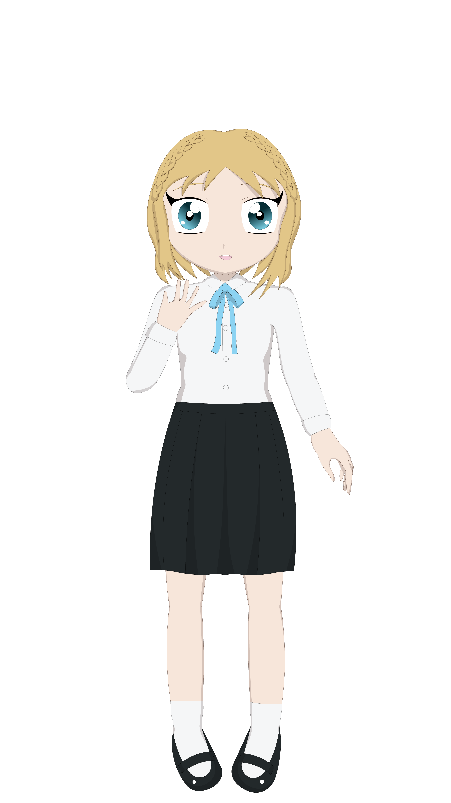

Episode 4
Just as soon as the words left my mouth a sudden chill ran down my back.
I closed my eyes.
...
Once I opened them I was not longer where I was.
My room was gone.
The pool was gone.
The entire house was no where to be found!

There was only one familiar thing...
White KitsuneIt's too soon, I haven't finished her heartseed!
YuiWhat is it?
YuiWhat's happening?
White Kitsune...
White KitsuneSomeone else in your neighborhood must have had a broken heart.
White KitsuneThey've transformed.
White KitsuneBy the looks of it, they became a nightmare and we were sucked into their labryinth.
White KitsuneWait! This feeling!

YuiMommy!
YuiShe was fighting with my brother!
YuiCould that break someone's heart?
White KitsuneIt could...
White KitsuneYou're catching on already.
White KitsuneBut your heartseed isn't ready yet!
White KitsuneIts too soon.

YuiHeartseed?
White KitsuneIt protects your heart while you fight. As long as nothing happens to your heart you'll heal from any injury.
YuiBut it isn't done yet? So...
White KitsuneHumans are very fragile. Without a heartseed, you won't last long.
YuiWhat do I do!?
White KitsuneRun!
White KitsuneYou have to find away out of the labryinth!
YuiBut mommy's here! I...
White KitsuneYou can't save her if your dead!
White KitsuneLook I can protect you for a little while, but I'm no match for a nightmare, even one that just hatched, so...
YuiI have to run.
YuiI'm coming back for her though!
White Kitsune?I wouldn't dream of stopping you.
White Kitsune?But only after you have your heartseed!
YuiWho are you?
White Kitsune?I'm the kitsune you were talking to.
White KitsuneI can use more magic in this form!
White KitsuneNow, come on, we have to hurry!
???...
YuiEeep!
White KitsuneNot that way!
???Hiiiis...
White KitsuneTake that!
???aaaargh
White KitsuneI can sense the exit!

Yui(huff) (huff) (puff)
Yui(cough) (weeze)
White KitsuneRight, just let me catch my breath and I'll get your heartseed done in a jiffy.
YuiW-wait!
YuiWhat should I call you?
White KitsuneWhat?
YuiWe're forming a contract, right? Don't you think I should know who I'm forming a contract with?
White KitsuneT-that doesn't matter.
YuiIt does for me!
White KitsuneCall me whatever you want.
YuiAt my old school we had a bunny named Naoko.
YuiWhat do you think? Do you like Naoko?
Naoko?Whatever! Its fine.
NaokoNow can I make you a heartseed or not?
YuiGo ahead, Naoko-chan!
I couldn't remember the last time I had smiled like that. I think it was before my father died.
A warmth filled my whole body.
It got so hot I thought it would burn me alive.
A closed my eyes.
Despite the pain, I knew Naoko wouldn't let me die.
I had complete trust in her.
When I opened my eyes a heart-shaped object floated right in front of my face.
Was this the heartseed Naoko had talked about?
-Naoko-That's your heartseed. The glowing thing inside is your heart. As long as it shines you'll have nothing to fear.
-Naoko-Now, embrace your power!
I grabbed the heartseed and held it close.
Something amazing happened after that. I could feel the same warmth I felt just a few moments ago, but this time not so painfully intense.
The heartseed pushed itself into my chest and I transformed.
- I became a magical girl!
- To be continued...